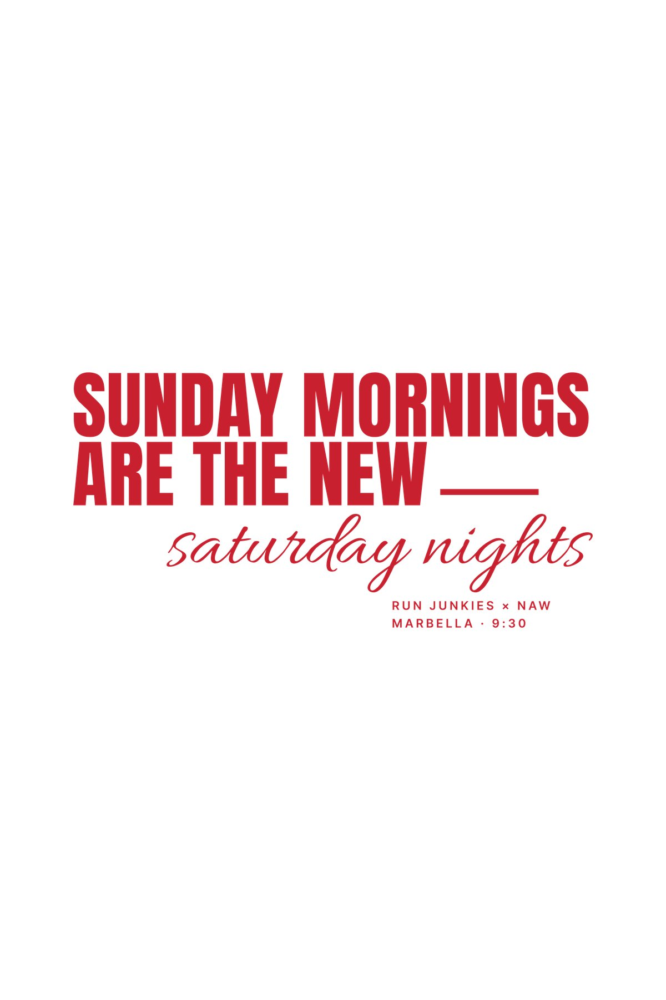
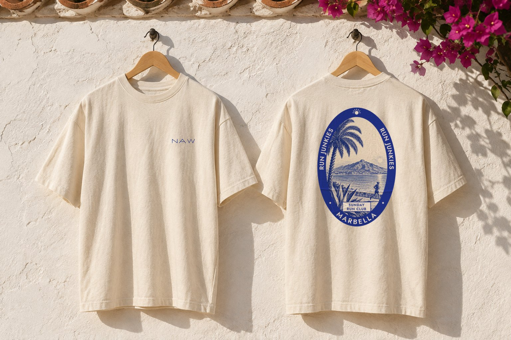
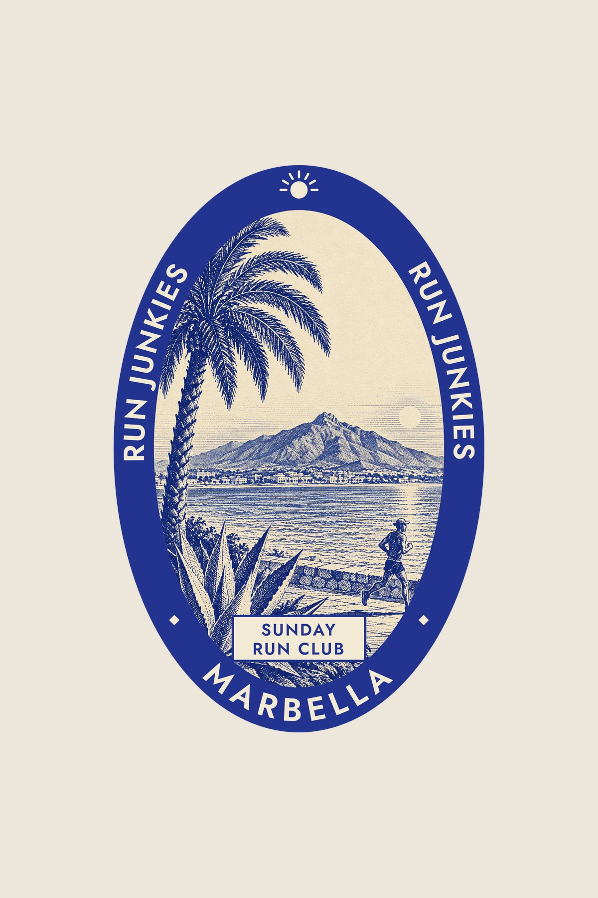
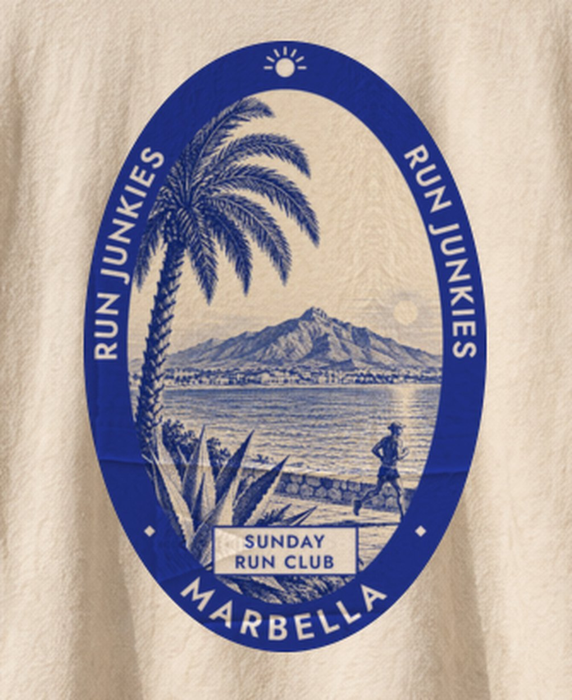
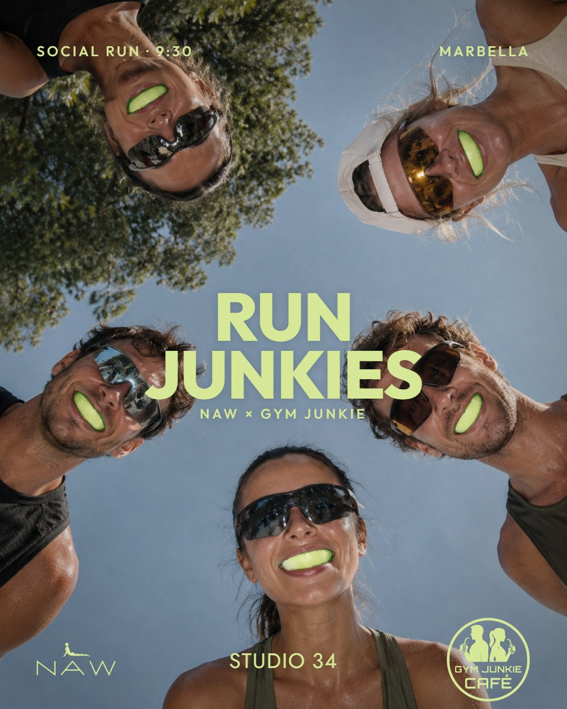

Run Junkies × NAW.
Gym Junkie Café, en Marbella, arranca un club de running los domingos a las 9:30 que termina con zumos en el café. NAW viste al club con dos camisetas pensadas para llevarse también fuera de la carrera, con la marca siempre visible: en el estampado, en el pecho o bajo el cuello. Cierra con el post que anuncia la primera salida.
Sunday mornings are the new saturday nights
Camiseta blanca heavyweight a una sola tinta rojo ladrillo. La frase cambia la noche del sábado por la mañana del domingo: mayúsculas condensadas y caligrafía, con "Run Junkies × NAW · Marbella · 9:30" en pequeño. Detrás, el logo de NAW pequeño bajo el cuello, en el mismo rojo.


Sunday Run Club · Marbella
Camiseta color crudo con una etiqueta de equipaje de hotel en la espalda, a una tinta azul ultramar. Dentro del óvalo, un grabado del paseo marítimo con palmera, pita, el mar, La Concha y un corredor; alrededor, "Run Junkies" y "Marbella". Delante, solo NAW en el pecho, en el mismo azul.



Post de Instagram · Social run
Para anunciar la primera salida: cinco corredores vistos desde abajo, con gajos de lima como protector bucal. Va en el lima del logo de Gym Junkie, con la hora y, abajo, los logos de NAW, Studio 34 y Gym Junkie Café en el mismo color.
